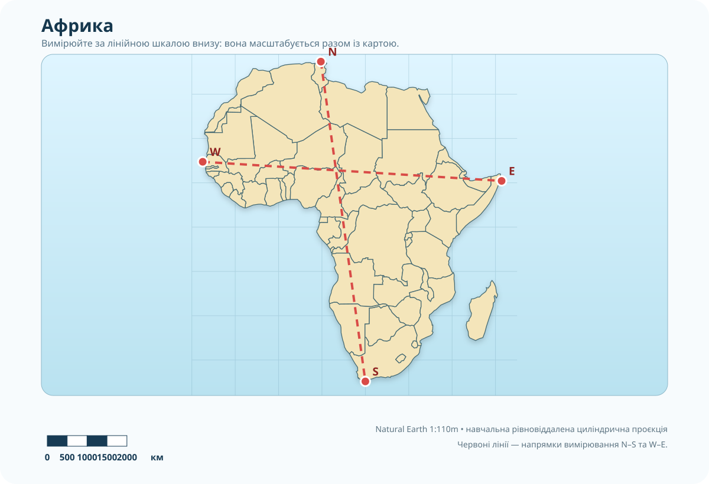
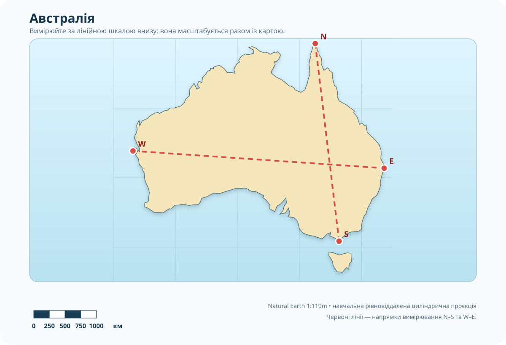
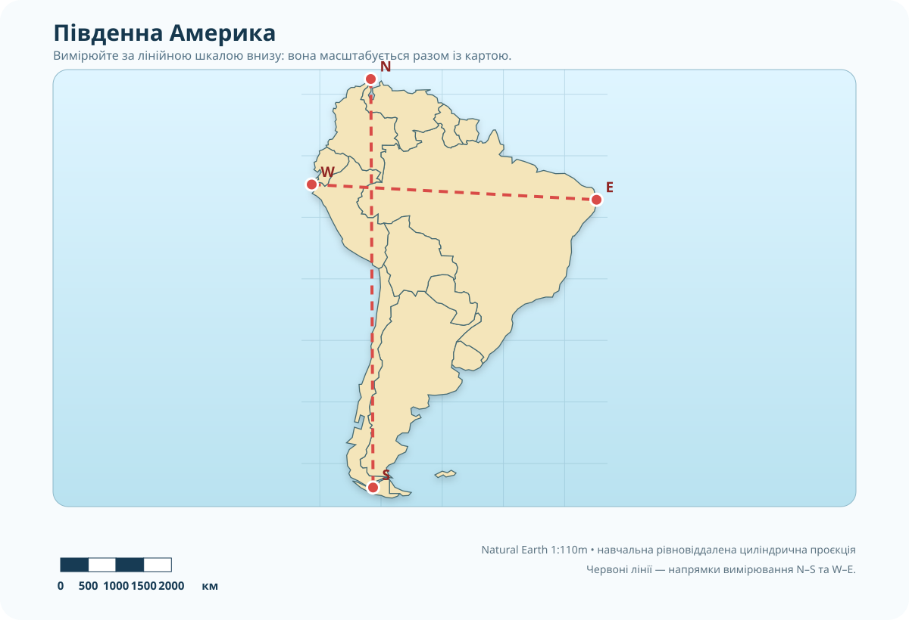

1. Проблема: 6 см — це багато чи мало?
На двох картах відстань між крайніми точками материка дорівнює 6 см. Чи може на місцевості одна з цих відстаней бути у п’ять разів більшою?
2. Масштаб-перекладач
Зіставте числовий та іменований масштаб. Тут важливе не везіння, а одиниці: 1 км = 100 000 см.
Підказка, якщо десь загубився нуль
Щоб перетворити знаменник числового масштабу на кілометри для 1 см карти, поділіть його на 100 000. Наприклад: 5 000 000 ÷ 100 000 = 50 км.
3. 70 секунд: знайдіть три форми масштабу
Перед переглядом: запишіть три слова, які очікуєте почути: числовий, іменований, лінійний. Після — сформулюйте, чим лінійний масштаб відрізняється не за виглядом, а за способом використання.
4. Лабораторія доказів: Африка
Карта нижче створена на основі векторних даних Natural Earth 1:110m. На ній є вбудована лінійна шкала в кілометрах і червоні лінії між крайніми точками материка. Вимірюйте саме за шкалою, а не за «сантиметрами екрана».

Немає лінійки? Є спосіб.
Візьміть смужку паперу. Спочатку перенесіть на неї довжину відрізка шкали 0–2000 км, а потім «крокуйте» цією міткою вздовж червоної лінії. Це працює навіть тоді, коли карта збільшена на проєкторі.
5. Різнорівнева місія: друга карта — новий доказ
Оберіть рівень. Високий рівень — не «більше писати», а працювати з додатковою картою та обмеженнями вимірювання.

Критерій 1 — абсолютні розміри
Порівняйте свої вимірювання Африки й Австралії. Який материк більший N–S? Який — W–E? Наведіть два числа як докази.
Критерій 2 — форма
Який материк сильніше витягнутий із заходу на схід? Не дивіться лише на картинку: порівняйте W–E з N–S.

6. Теорія: тепер називаємо те, що вже зробили
1. Числовий
1 : n означає: 1 одиниця на карті відповідає n таким самим одиницям на місцевості.
2. Іменований
Перекладає числовий масштаб людською мовою: «в 1 см — 50 км». Для 1:5 000 000 це саме так.
3. Лінійний
Графічна шкала. Її головний плюс у вебуроці: вона збільшується і зменшується разом із картою.
4. Більший масштаб
1:25 000 — більший масштаб, ніж 1:2 500 000. У знаменнику менше число → територія показана детальніше.
5. Алгоритм
Знайти масштаб → виміряти відрізок → перевести одиниці → округлити розумно → оцінити похибку.
6. Не вся відстань пряма
Звивисту річку або берег вимірюють ниткою, курвіметром або цифровим інструментом. Результат залежить від деталізації.
7. Картографічний детектор: пастка браузера
Уявіть, що в підручнику карта надрукована в масштабі 1:50 000 000. Її сфотографували й відкрили на сайті, а потім збільшили до 140%. Чи можна прикласти звичайну лінійку до екрана і користуватися числовим масштабом без поправки?
Надпис: 1 : 50 000 000
8. Підсумок CER
Питання: який спосіб масштабу найнадійніший для вимірювання карти, що може змінювати розмір на екрані?
9. Домашнє завдання
Обов’язково
§7. Повторіть три форми масштабу та алгоритм вимірювання.
Коротке відео перед тестом: фрагмент про числовий, іменований і лінійний масштаб.
Завдання на вибір
Базовий: перетворіть 1:3 000 000, 1:7 500 000 і 1:20 000 000 на іменований масштаб.
Достатній: за картою Австралії визначте N–S і W–E, запишіть різницю та поясніть, у якому напрямку материк витягнутий сильніше.
Високий: за картою Південної Америки виконайте два вимірювання й складіть CER про похибку: що виміряли, який доказ отримали, чого карта не дозволяє довести абсолютно точно.
Тест • 10 балів
Зробіть скриншот цієї картки та надішліть учителю.